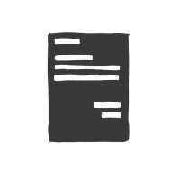
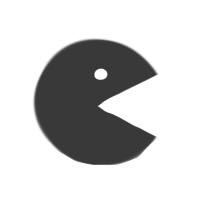

PROJECTS AND MORE
ArtSock (github code) A summer project that stemmed from wanting to create a personal art blog independent of currently existing sites. Led to learning PHP/SQL, and creating a webpage based in HTML/CSS, JS, and the PureAPI to dynamically read in from a MySQL database using phpMyAdmin.
SoundBoard (github code) A Java program that tries to emulate the capabilities of a midi fighter with your keyboard and Java's audio support. Java unfortunately is incapable of many audio capabilities plus giving a user actual musical talent, but it's enjoyable nonetheless.
fiddle (github code) Another summer java project to create a 2D side scroller, exploring the capabilities of multithreading and graphical support in the language. Currently only has one 'level,' thus is incapable of actually scrolling to the side. Optimistically in development.
PyDaily (github code) A python program to solve the daily hassle of making a physical to do lists. Uses the Google Calendar API to print up to ten upcoming events along with other daily nonsense, plus parses allrecipes.com for a random recipe selection for the day.
CS Distress (github code) A game library created for a CS undergrad study group I organized. Updated each semester with new games centered on teachers we have graduate from. In development; currently being switched to web version for ease of use.
 Budgetier (github code) First web project created using self taught HTML/CSS, JS, and other etc. Provides a monthly overview of expenses to aid in budgeting via the JS Charts library. Will be linked to SQL database soon to make a dynmanic, and thus more useful budget account.
Budgetier (github code) First web project created using self taught HTML/CSS, JS, and other etc. Provides a monthly overview of expenses to aid in budgeting via the JS Charts library. Will be linked to SQL database soon to make a dynmanic, and thus more useful budget account.